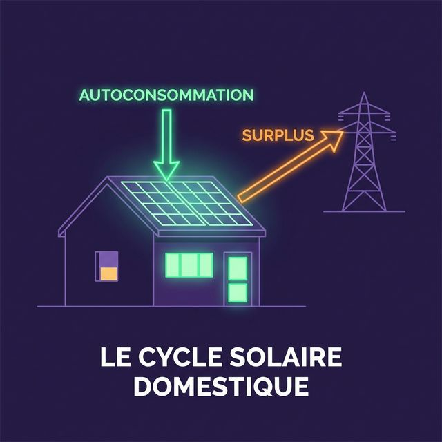
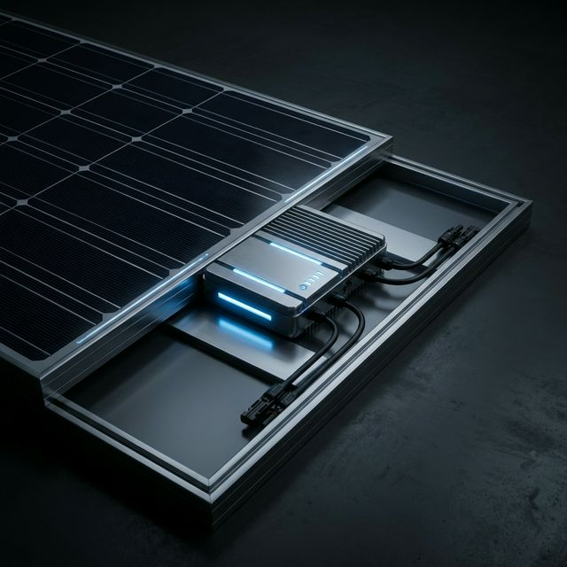
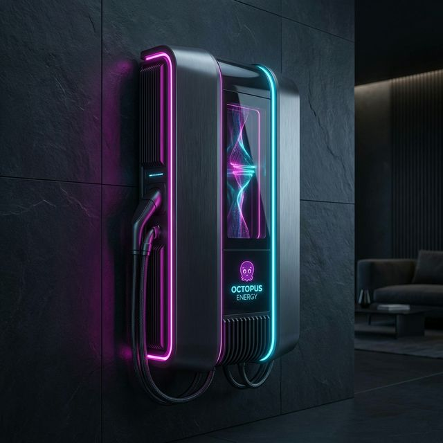

Introduction au Solaire
Depuis février 2024, Octopus Energy France a lancé une nouvelle activité majeure : la commercialisation et l'installation de panneaux photovoltaïques (nous faisons des installations résidentielles uniquement pour l'instant).
Cette activité s'inscrit dans notre objectif global de permettre à nos clients de maîtriser leur consommation, de consommer de la manière la plus locale possible et ainsi de participer activement à la transition énergétique globale.
Notre force : Une offre transparente, sans coût caché et sans aucune sous-traitance Contrairement à la majorité du marché, Octopus emploie ses propres installateurs qualifiés pour garantir une fiabilité totale de l'installation au nettoyage. . L'ensemble des installateurs sont salariés d'Octopus Energy Services France (OESF), ce qui nous permet de garantir une qualité d'exécution et un SAV irréprochable.
Les Bases du Solaire
Il est crucial de comprendre la différence entre les technologies et les unités de mesure que nous utilisons au quotidien avec nos clients pour être parfaitement crédible.
Thermique VS Photovoltaïque
L'Unité de Mesure : Le kWc (Kilowatt-crête)
Le Watt crête (Wc) caractérise la puissance maximale d'un panneau dans des conditions d'ensoleillement et de température optimales. En pratique en un an, un panneau solaire standard de 500 Wc produit une quantité d'énergie variable, car cela dépend fortement de l'inclinaison de la toiture, de l'ensoleillement et de la localisation géographique. C'est pour cela que nous réalisons systématiquement des études personnalisées. Pour donner un ordre d'idée (à ne pas utiliser comme une promesse commerciale) : en règle macro, 1 kWc produit environ 900 à 1 400 kWh/an en France métropolitaine, un panneau de 500 Wc produit donc en moyenne entre 450 et 700 kWh/an.
Taille, Dimensions & Durée de Vie
- Nos Panneaux : Nous travaillons avec les panneaux français Voltec.
- Dimensions et Poids : Un panneau mesure environ 1m de large sur 1,7m de long pour un poids d'environ 23 kg (ces panneaux sont les plus légers du marché).
- A l'échelle du marché : En France, plus de 85% des installations pour particuliers font 3 kWc ou moins. Chez Octopus, nous installons majoritairement entre 3kWc et 9kWc, et notre maximum est de 15kWc.
- Exemple type : Une installation de 3 kWc représente 6 panneaux. Elle couvre une grande partie de la consommation hors-chauffage d'un foyer moyen.
- Durée de vie : Supérieure à 30 ans. Notre fournisseur Voltec garantit les panneaux 30 ans.
Autoconsommation & Gestion du Surplus

L'autoconsommationFait de consommer sa propre production d'électricité, de manière individuelle ou collective. est le fait de consommer tout ou partie de sa propre production d'électricité. La grande majorité de nos clients sont en "autoconsommation avec injection du surplus".
Exemple Chiffré : Différence entre Autoconsommation et Autoproduction
Ces deux termes sont la clé de la rentabilité. Bien qu'ils semblent similaires, ils mesurent deux choses très différentes. Prenons un exemple sur une journée :
Production Solaire Totale
10 kWh
(Ce que les panneaux ont créé)
Consommation Totale de la Maison
15 kWh
(Ce que la maison a utilisé sur 24h)
Sur les 10 kWh produits, vous avez consommé 6 kWh directement. C'est ce chiffre qui est la clé !
1. Le Taux d'Autoconsommation
On se concentre sur la ligne de production.
"Sur les 10 kWh produits, quelle part ai-je utilisée ?"
(6 / 10) = 60%
Le reste (40% soit 4 kWh) est le surplus injecté sur le réseau. Sans batterie, ce taux stagne souvent entre 20 et 40%.
2. Le Taux d'Autoproduction
On se concentre sur la ligne de consommation.
"Sur les 15 kWh dont j'avais besoin, quelle part vient de mes panneaux ?"
(6 / 15) = 40%
C'est le niveau d'autonomie. Je m'approvisionne encore à 60% auprès de mon fournisseur.
Réconcilier les courbes de Production et de Consommation
Le grand défi du solaire : les panneaux produisent leur maximum à midi en été, tandis que le foyer français consomme son pic le matin et le soir en hiver. Plusieurs solutions :
- Stocker : Investir dans des batteries physiques domestiques (voir module suivant).
- Piloter : Utiliser la domotique pour déclencher des appareils énergivores (lave-linge, ballon d'eau chaude, recharge de véhicule électrique) pendant les pics de soleil.
- Revendre (Valoriser le Surplus) : Les contrats EDF OAEDF Obligation d'Achat : Service mandaté par l'État pour acheter l'électricité verte des particuliers à prix fixe pendant 20 ans. (Aujourd'hui à 0,04 €/kWh en surplus). ou via un acheteur alternatif (comme notre offre Octopus !). L'État fixe le tarif OA chaque trimestre via la CRE.
L'Autoconsommation Collective : Partager l'Énergie
⚠️ Attention : OESF ne fait pas d'autoconsommation collective !
Cette section est purement informative. Toutes nos installations sont dédiées à de l'autoconsommation individuelle pour éviter toute confusion.
L'autoconsommation collective (ACC) permet à un groupe de producteurs et de consommateurs locaux de se partager l'électricité. Quel que soit le modèle, tous les participants doivent être rassemblés au sein d'une entité légale unique : la PMOPersonne Morale Organisatrice : Souvent une association ou coopérative gérant le contrat collectif avec Enedis..
Deux modèles d'organisation
Le "Soleil Central"
Une seule grande installation centralisée (ex: le toit d'une école ou d'un supermarché) produit pour de nombreux consommateurs alentours.
Le "Village Solaire"
Plusieurs maisons sont à la fois productrices et consommatrices. Elles mutualisent leurs surplus pour l'ensemble du groupe.
Le Fonctionnement Technique : Physique et Numérique
-
1. Le Flux Physique
Le surplus d'électricité est injecté sur le réseau public et, par les lois de la physique, consommé par les bâtiments les plus proches (membres du groupe ou non). Le réseau agit comme un grand "lac". -
2. Le Flux des Données
Toutes les 30 minutes, les compteurs Linky mesurent la production et la consommation. Enedis centralise ces données et "attribue" virtuellement la production locale aux consommateurs du groupe, selon la clé de répartition définie par la PMO. -
3. Facturation
La part d'énergie qui vous est attribuée virtuellement n'est pas facturée par Octopus. Vous la payez directement à la PMO, à un tarif local défini entre les membres.
Technologie : Panneaux & Onduleurs
Nos Panneaux Solaires
Il faut être transparent : 90 à 95% des panneaux solaires installés en France sont de fabrication chinoise. Les cellules photovoltaïques proviennent quasi-exclusivement d'Asie. Octopus propose deux gammes :
- Gamme Standard : Panneaux asiatiques (Chine/Vietnam). Ils ne sont pas chers mais ce n'est pas le meilleur rapport qualité/prix. Au bout d'un an, nous pouvons voir que ces panneaux s'affaissent sur toiture... Ce n'est pas du tout de bonne qualité.
- Gamme Française (Voltec Solar) : Une gamme environ 1000€ plus chère. Voltec Solar (et feu-Systovi) sont les "seuls" fabricants français (et non des marques re-badgées). Cela signifie qu'ils assemblent au moins 30% du panneau sur notre territoire.
L'Onduleur & le Système EMS
Un panneau produit un "courant continu". L'onduleur a la lourde tâche de le réguler et de le transformer en "courant alternatif" compatible avec le réseau de la maison. Son rendement et sa fiabilité sont capitaux.
Le Système de Gestion Énergétique (EMS) : C'est le cerveau de l’installation. Ce boîtier électronique connecté optimise en continu la consommation. Il croise les données de production, de consommation (compteur Linky) et météo pour piloter automatiquement les appareils énergivores (ex: chauffer l'eau ou charger la voiture électrique uniquement quand le soleil brille).

Attention : dans tous les cas, l'onduleur de chaîne et micro-onduleurs sont obligatoires lors de l'installation d'une batterie.
Stockage & Batteries : Changer de Dimension
Les tarifs de rachat étatiques ayant tendance à baisser, l'installation d'une batterie physiqueBatterie au Lithium Fer Phosphate (LFP), d'une grande durabilité (>6000 cycles) avec un risque incendie nul. devient l'atout maître de la rentabilité.
L'Impact massif de la batterie : Une installation classique sans batterie atteint ~35% d'autoconsommation. Avec une batterie de 5kWh à 10kWh, ce taux bondit jusqu'à 80% ! C'est la garantie de soulager la facture
Le Pilotage Avancé Octopus
Non seulement nous stockons, mais nous pilotons intelligemment :
- Détection intelligente : Les pinces ampèremétriques ne sont pas posées sur le Linky mais à la sortie de l'AGCPAGCP est l'acronyme pour Appareil Général de Commande et de Protection. Dans le langage courant, c'est ce que l'on appelle tout simplement le disjoncteur général (ou disjoncteur d'abonné). Il se trouve généralement juste après le compteur électrique (comme le Linky) et juste avant le tableau électrique de la maison. et au niveau de l'arrivée de la production solaire (sur les fils électriques). Elles sont reliées à un système de compteur, lui-même relié aux applications pour suivre conso et prod en temps réel. Ce ne sont pas elles qui vont "ouvrir" la batterie pour stocker : c'est grâce aux technologies de l'onduleur de chaîne ou du boîtier de communication des micro-onduleurs qui vont détecter le besoin de stockage ou d'utilisation de la batterie pour le foyer.
- Gestion Dynamique (par API) : Octopus recharge la batterie l'hiver pendant les Heures Super Creuses la nuit pour s'en servir aux heures de pointes. Du pur génie tarifaire.

Le Piège des "Batteries Virtuelles"
Octopus ne propose PAS de batterie virtuelle. Derrière ce terme marketing très séduisant ("Je stocke mon énergie dans le Cloud"), rien n'est stocké. L'énergie est injectée en direct sur le réseau public à midi, et le fournisseur "prête" un crédit au client le soir, mais en facturant : le coût de l'abonnement mensuel, le coût d'acheminement réseau (le TURPE) et les taxes.
En batterie virtuelle, le client reste en réalité dépendant à 100% du réseau. De plus, il perd souvent le droit aux aides de l'État et aux rachats EDF OA.
Nos Séries Phares : L'Évolution vers SolarBoost
Depuis le début de l'année 2026, Octopus Energy amorce une transition majeure de son offre historique "Solar Plus" vers une offre ultra-innovante centrée sur la tarification dynamique de la batterie : SolarBoost.
L'Historique : Solar Plus
L'offre de lancement, désormais en fin de commercialisation.
- Tarif de fourniture à -3% sous le TRV.
- 428 heures creuses supplémentaires par an (activation en journée l'été).
- Rachat fort du surplus : 0,13€/kWh bloqué sur 3 ans.
🟢 Le Nouveau "Game Changer" : SolarBoost
La première offre combinant rachat de surplus ET pilotage intelligent de la batterie.
- Tarif d'électricité : Fixe sur 3 ans au prix du TRV.
- Rachat du surplus : Aligné au marché à 0,04€/kWh (bloqué 3 ans, par virement annuel).
- Bonus de Pilotage Quotidien : Octopus reverse une "cagnotte" chaque jour où la batterie est prête à aider le réseau. (Exemple : 1€ / jour de gagné pour une batterie 10kWh, soit un gain net garanti de 1095€ sur 3 ans !).
🧮 Simulateur de Gains : Bonus Cagnotte
Testez l'impact de la taille de la batterie sur la Cagnotte finale du client sur 3 ans :
🎁 Offre exclusive, votre première année offerte
En installant vos panneaux avec Octopus, nous couvrons intégralement votre consommation
d'électricité la première année.
C'est notre garantie pour vous lancer sans
stress.
Jusqu'à 80% d'économies sur vos factures tous les ans
Profitez d'une technologie exclusive qui combine stockage intelligent et optimisation en temps réel pour maximiser votre rentabilité dès le premier jour.
Comment ça marche ?
Autoconsommation
Consommez l'énergie solaire que vous produisez.
511€
PAR AN
Bonus Pilotage
Gagnez un bonus quotidien fixe grâce au pilotage de votre batterie.
Rachat du Surplus
Recevez l'argent directement sur votre compte.
Éligibilité à SolarBoost
Pour souscrire le client à cette offre exceptionnelle, le Ops doit vérifier 4 critères obligatoires :
- Le client doit être en fourniture d'électricité chez Octopus Energy.
- Il doit posséder une batterie compatible (marques Huawei ou Enphase à ce jour).
- La taille de la batterie (en kWh) doit être supérieure ou égale à la puissance de l'installation (en kWc). Exemple : Batterie 7 kWh obligatoire pour du 6 kWc.
- Le client autorise contractuellement le pilotage de sa batterie (pairage sur l'application Octopus).
L'Économie d'un projet Solaire : Avantages & Fiscalité
La question numéro un de nos clients : "Quel bénéfice j'en tire ?". Et à juste titre !
Les 3 grands avantages économiques
💰 Rentabilité
Une installation 3 kWc coûte entre 8000 et 12000€. Avec nos offres, le seuil de rentabilité est atteint entre 7 à 8 ans dans le Sud et 9 à 10 ans dans le Nord.
🌍 Écologie
Une installation de 3 kWc évite l'émission de plus de 25 tonnes de CO₂ sur sa durée de vie (25 ans).
🏠 Valorisation Immobilière
Une maison équipée gagne 3 à 5 % de valeur à la revente et obtient une bien meilleure étiquette au DPE.
Les Subventions de l'État
- La Prime à l'autoconsommation : Versée pour les installations en
autoconsommation avec vente du surplus (≤ 100 kWc, installateur RGE, raccordement Enedis).
Montants indicatifs au 1er trimestre 2026 (barème CRE) :- ≤ 9 kWc : 80 €/kWc.
- 9 à 36 kWc : 140 €/kWc.
- 36 à 100 kWc : 70 €/kWc.
- Le contrat EDF OA : Vente du surplus garanti 20 ans (tarif fixe fixé par l'Etat
via la convention CRAE : 0,04 €/kWh).
⚠️ Attention : si le client décide de partir de chez EDF OA, il ne pourra plus y revenir et devra rembourser la totalité des aides perçues.
La subtilité de la TVA Solaire en 2026
| Taux de TVA | Les Conditions (Cumulatives !) |
|---|---|
| 20 % (Taux Normal) | Soumis d'office si : Logement neuf (< 2 ans), ou Installation dépassant les 9 kWc, ou Projet réalisé sans artisan RGEReconnu Garant de l'Environnement. Certification de l'État que toutes nos équipes possèdent.. |
| 10 % (Intermédiaire) | Logement de plus de 2 ans ET Puissance minime (≤ 3 kWc) ET Artisan RGE. |
| 5.5 % (Super-réduit) | La nouveauté écologiqueA pour but d'encourager la pose d'installations bas carbone avec domotique énergétique. : Logement > 2 ans ET Puissance (≤ 9 kWc) ET Artisan RGE ET Présence d'un gestionnaire EMSEnergy Management System : Pilote la consommation (chauffage, VE) pour l'aligner sur la production solaire. (boîtier intelligent) ET Bilan Carbone des panneaux très strict (≤ 530 kgCO2). |
Déclaration aux Impôts des revenus solaires 📄
Même si nous gérons la revente du surplus, le client **a l'obligation légale de déclarer ces revenus** chaque année via le formulaire Cerfa 2042 C Pro. Mais attention, la taxation dépend d'un seuil clé :
⚡ Installation ≤ 3 kWc
Les revenus issus de la vente de surplus sont totalement exonérés d'impôt sur le revenu et de prélèvements sociaux (à condition qu'il s'agisse d'un usage résidentiel avec 2 points de raccordement maximum). Les gains doivent juste figurer dans la case "revenus nets exonérés". C'est un pur bonus net pour le client !
📈 Installation > 3 kWc
(Ex: 4 kWc, 6 kWc, 9 kWc). Les revenus sont
imposables sous le régime du Micro-BIC (Bénéfices Industriels et
Commerciaux).
La bonne nouvelle : L'État applique un
abattement forfaitaire massif de 71 %. Le client n'est donc imposé que sur
les 29 % restants de ses bénéfices. De plus, les 305 premiers euros sont exonérés d'office.
Et le Recyclage dans tout ça ? ♻️
C'est une objection fréquente des clients : "les panneaux ne se recyclent pas". C'est totalement faux.
En France, le recyclage est extrêmement bien structuré. À la fin de leur cycle de vie (plus de 30 ans), les panneaux sont récupérés par l'éco-organisme agréé par l'État : SorenSoren collecte et recycle les panneaux solaires usagés en France métropolitaine et Outre-mer, financé par une éco-participation lors de l'achat..
Actuellement, un panneau solaire (composé de verre, d'aluminium, de silicium et de cuivre) est recyclé à hauteur de 95 % ! Octopus Energy est partenaire, et nos 2 entrepôts sont des points de collecte pour récupérer les panneaux. Soren les collecte et les récupère !
Mises en situation (Flashcards)
Cliquez sur chaque carte pour découvrir l'argumentation recommandée face à ces objections courantes.
Batterie Virtuelle
"J'ai vu des concurrents qui proposent une 'batterie virtuelle'. Ils disent que je stocke mon énergie dans le cloud et que c'est moins cher qu'une vraie grosse batterie chez moi. Vous faites ça ?"
La réponse DigiOps
« Non, et c'est un choix assumé pour vous protéger ! La batterie virtuelle, c'est un terme marketing. En réalité, l'énergie n'est pas stockée : elle part sur le réseau public. Quand vous la récupérez le soir, le fournisseur vous fait payer les taxes, les frais d'acheminement (TURPE) et souvent un abonnement mensuel ! Vous restez 100% dépendant du réseau.
Chez Octopus, on installe une vraie batterie physique. Non seulement vous êtes vraiment autonome (jusqu'à 80%), mais avec notre offre SolarBoost, c'est NOUS qui vous payons une cagnotte tous les jours pour utiliser votre batterie. C'est beaucoup plus rentable. »
L'Artisan local
"C'est super votre truc, mais l'artisan de mon village m'a fait un devis. Pourquoi je passerais par un gros fournisseur d'énergie plutôt que par lui pour mes travaux ?"
La réponse DigiOps
« C'est une excellente question. La grande différence d'Octopus, c'est que nous sommes nos propres artisans. Nous n'avons aucun sous-traitant : les personnes qui viendront chez vous sont des salariés de chez nous (OESF).
L'avantage pour vous ? Si dans 10 ans il y a le moindre souci avec un onduleur, l'artisan du coin sera peut-être à la retraite ou aura fermé. Nous, on sera toujours là, avec un SAV dédié et des pièces garanties 25 ans. Et surtout, seul Octopus peut vous proposer le pilotage intelligent SolarBoost et vous offrir votre première année d'électricité ! »
L'Écologie
"Je veux bien réduire ma facture, mais on sait très bien que les panneaux solaires c'est un désastre écologique. Ça vient du bout du monde et ça ne se recycle pas !"
La réponse DigiOps
« C'est une idée reçue très tenace, mais c'est faux ! Aujourd'hui en France, le recyclage est ultra structuré avec l'éco-organisme Soren. Un panneau, c'est surtout du verre, de l'aluminium et du silicium : il est recyclé à 95 %.
Pour la provenance, on joue la transparence totale : vous avez le choix entre notre gamme standard (asiatique, car c'est 95% du marché mondial avec le meilleur rapport qualité/prix), ou notre gamme Voltec Solar, qui est assemblée en France. »
Forcing du Prix
"Génial, vous m'avez convaincu avec l'offre SolarBoost. J'ai une maison de 100m2. Vous pouvez me donner le prix exact de l'installation là, tout de suite au téléphone ?"
Le bon réflexe
« Je comprends votre impatience ! Mais chaque toiture est unique. Le prix dépend de votre consommation réelle, de l'inclinaison de votre toit et de la taille de la batterie nécessaire pour maximiser vos gains SolarBoost.
Mon rôle, c'est de valider que votre maison est bien éligible (on vérifie la zone et la toiture ensemble). Ensuite, ce sont nos experts Solaire qui prennent le relais. Ils vous rappellent sous 48h et vous sortent un devis précis au centime près. »
L'incrédule
"Attendez, vous me dites que vous m'offrez un an d'électricité, et qu'en plus vous me payez une cagnotte tous les jours grâce à ma batterie ? Il est où le loup ?"
La réponse DigiOps
« Je comprends votre réaction, on n'a pas l'habitude de voir ça ! Mais il n'y a aucun loup, c'est un partenariat gagnant-gagnant grâce à notre technologie SolarBoost. Et n'oubliez pas que nous avons le soutien d'un groupe valorisé à 13 milliards $, ce qui nous permet de négocier avec les fournisseurs pour des prix bas et ainsi proposer des offres hyper intéressantes !
Etant fournisseur, nous avons aussi l'avantage de racheter le surplus et d'utiliser les applications du groupe pour le pilotage à distance des appareils. Les jours où le réseau national est sous tension, au lieu de rallumer des centrales polluantes, Octopus utilise une petite partie de votre batterie pour soulager le réseau. Vous nous rendez un service énorme, donc c'est normal qu'on vous rémunère avec un Bonus de Pilotage quotidien ! Quant à la première année offerte, c'est notre investissement de bienvenue. »
L'Administratif
"J'ai un ami qui a mis des panneaux, ça a été un enfer avec la mairie, Enedis, et maintenant il s'arrache les cheveux avec les impôts. Je n'ai clairement pas le temps."
La réponse DigiOps
« Votre ami n'est sûrement pas passé par Octopus ! Chez nous, la règle d'or c'est le "zéro charge mentale". Notre équipe s'occupe de monter et déposer 100% des dossiers mairie et Enedis. Vous n'avez rien à faire.
Et pour les impôts : si on installe ≤ 3 kWc, vos revenus sont totalement exonérés. Même si on pose plus grand, l'État vous fait un cadeau avec un abattement de 71%. C'est juste une case à remplir, et on vous expliquera laquelle ! »
Le Hors-Zone
"Génial ! Je suis hyper chaud pour l'offre SolarBoost. J'ai une grande villa à Marseille avec un grand toit plat orienté plein sud, on signe quand ?"
Le réflexe indispensable
« Ah, votre maison a l'air parfaite... mais je vais devoir vous freiner un peu ! Actuellement, on couvre tout le quart Nord-Ouest et Centre-Ouest de la France, mais pas encore le Sud.
Pour garantir notre qualité, on ne fait aucune sous-traitance. Ce sont nos propres installateurs OESF qui interviennent, et on ouvre les zones progressivement. Je préfère être honnête avec vous. Mais je note vos coordonnées pour vous rappeler dès qu'on arrive chez vous ! »
Le Budget
"C'est bien beau l'écologie, mais une installation avec une batterie intelligente, ça doit coûter 15 000 euros. Je n'ai pas les moyens d'avancer ça."
La réponse DigiOps
« C'est un vrai budget, mais voyez-le comme un investissement qui va payer vos prochaines factures ! Déjà, l'État vous verse une Prime à l'autoconsommation. Ensuite, grâce à l'EMS, vous bénéficiez d'une TVA réduite à 5,5 % au lieu de 20 %.
Ajoutez à cela la première année offerte et la cagnotte SolarBoost, l'installation se rentabilise en général entre 7 et 10 ans. Laissez nos experts étudier votre compteur gratuitement, ils vous feront un plan de financement précis ! »
Nos Zones d'Intervention & Le Workflow
Où installons-nous ? (Carte des Départements)
À ce jour, nos équipes d'installateurs internes Octopus Energy Services France (OESF) opèrent exclusivement dans le quart Nord-Ouest et Ouest de la France. Le client doit impérativement résider dans l'une des zones suivantes :
1. Qualification & Typeform
Vérification de l'éligibilité. Le client doit habiter notre zone logistique listée ci-dessus, avoir une toiture de >15m², connectée au réseau public (ENEDIS), couverte sans trace d'amiante. S'il n'est pas éligible, il est averti par mail automatiquementCe mail tombe très souvent dans les spams, ce qui donne l'impression aux clients qu'on ne leur a pas répondu..
2. Appel Commercial (Sous 48H)
Calibrage précis de la consommation (via données Linky), ajustement de la puissance (faut-il du 6kWc ou plutôt du 9kWc avec Batterie ?). Edition du Devis.
3. Administratif (DP & Enedis)
Octopus constitue le dossier. Attention, c'est l'étape la plus longue qui peut durer jusqu'à 8 mois car elle dépend d'organismes externes à Octopus. L'Urbanisme de la mairie a généralement 1 mois pour valider le projet. Il faut également créer un dossier chez Enedis : CAE ou CACSICe sont 2 choses différentes ! Le CAE (Contrat d'Accès et d'Exploitation) est obligatoire si on revend notre surplus (notre modèle standard avec EDF OA). La CACSI est une convention stricte SANS injection de surplus sur le réseau..
4. L'Installation & Consuel
L'installation prend entre 1 à 3 jours en fonction de la taille de la centrale PV. Elle est réalisée par NOS équipes. Un organisme consulaire (Consuel) validera ensuite l'intégrité électrique du réseau pour donner son feu vert à la revente.
Organisation SAV Octopus
Chez nous, nos équipes SAV se divisent en deux entités dédiées, avec pour point de contact central `solaire@octopusenergy.fr` :
- Niveau 1 "Distance" : 80% des tracas (mises à jour d'onduleurs, reboot, app qui freeze).
- Niveau 2 "Intervention Physique" : Des vrais techniciens Octopus qui se rendent sur site pour changer des pièces (et non des sous-traitants désintéressés). C'est le pilier de notre marque de fabrique.
Rappel des Garanties de l'électronique Solaire : Même si l'Europe ne demande souvent que 2 ans de base, dans le circuit Solaire les garanties sont prodigieuses. Octopus garantit son SAV pendant 3 ans (nous l'avons rallongé car nous croyons en nos produits et installations). Les onduleurs sont garantis entre 10 et 25 ans en fonction de la marque. Les batteries entre 10 et 15 ans selon les constructeurs. Une fois cette garantie échue, la batterie fonctionne toujours très bien, mais le constructeur ne gère plus les pannes gratuitement.